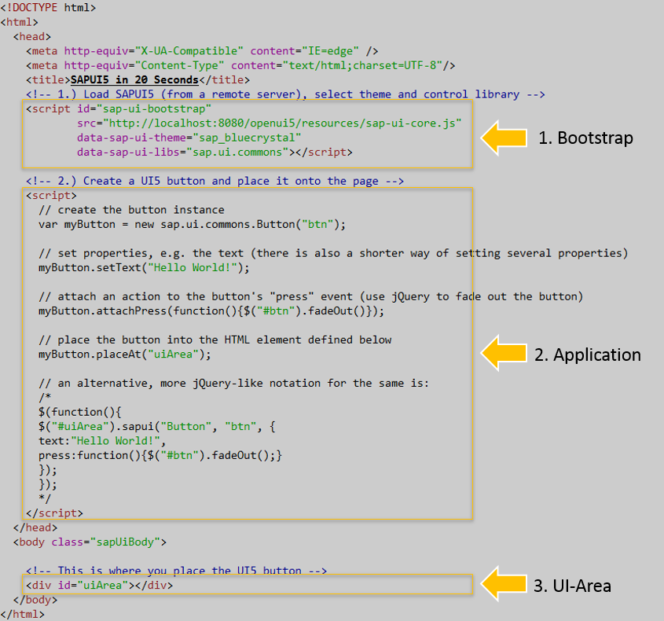
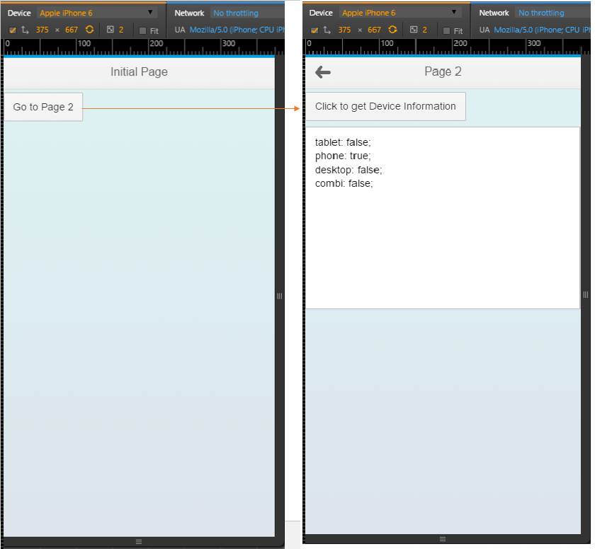
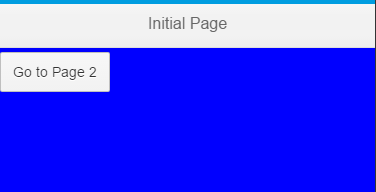

介绍UI5代码结构以及一个重要的库 sap.m .
UI5代码结构
上一次我们一起用了20秒的时间完成一个UI5版的Hello World。应用打开后有一个按钮，按钮的文字是Hello World，点击这个按钮之后，按钮会慢慢的消失掉(Fade out)。
那我们这次就来看一看为了实现这么一个简单的功能，OpenUI5框架至少需要提供哪些内容，或者说我们通过这么一个简单的应用来看一下一个最简单的UI5的应用程序的结构。
HTML部分应该不用多说，我们只看和UI5相关的代码，第一部分我们称为Bootstrap，包含以下代码段：
<!-- 1.) Load SAPUI5 (from a remote server), select theme and control library -->
<script id="sap-ui-bootstrap"
src="http://localhost:8080/openui5/resources/sap-ui-core.js"
data-sap-ui-theme="sap_bluecrystal"
data-sap-ui-libs="sap.ui.commons"></script>
这是一段嵌入的javascript代码，首先引入了UI5的核心运行时库sap-ui-core.js，接下来代码通过标签设定了两个属性，分别是主题： data-sap-ui-theme ，以及在应用中将会引用到的UI库： data-sap-ui-lib 。
接下来这一段我们称为Application，我们的应用的主体就在这里了，包含的是如下代码段：
<!-- 2.) Create a UI5 button and place it onto the page -->
<script>
// create the button instance
Var myButton = new sap.ui.commons.Button("btn");
// set properties, e.g. the text (there is also a shorter way of setting several properties)
myButton.setText("Hello World!");
// attach an action to the button's "press" event (use jQuery to fade out the button)
myButton.attachPress(function(){$("#btn").fadeOut()});
// place the button into the HTML element defined below
myButton.placeAt("uiArea");
// an alternative, more jQuery-like notation for the same is:
/*
$(function(){
$("#uiArea").sapui("Button", "btn", {
text:"Hello World!",
press:function(){$("#btn").fadeOut();}
});
});
*/
</script>
这段代码也很容易理解，首先创建一个button的对象，然后设置button对象显示的文本为"Hello World!"，接着为这个按钮注册一个点击事件——按下去的时候按钮自己会消失，最后把这个按钮放在一个叫做uiArea的地方。 uiArea在哪里呢？接下来看第三段代码。
第三段代码就称之为UI-AREA：
<div id="uiArea"></div>
一个div，并将其id设置为我们之前所用到的uiArea。
简单吗？非常简单，第一部分Bootstrap引入运行环境以及一些常用配置文件，第二部分Application中加入HTML控件以及相应的后台数据和业务逻辑，并将其放入到第三部分UI-AREA中。
最后还是再看一下，有些啰嗦，熟悉UI5开发的可以直接无视，但是对于UI5开的新手来说，掌握了这个基本结构，就清楚了UI5程序的最基本的脉络。

UI5 Mobile
UI5中最重要的库是sap.m，目前大多数SAP Fiori的应用都是基于这个库来开发，使用这个库可以让应用在不同的终端、平台之前无缝切换，响应式的设计可以让应用的UI在不同分辨率的设备上呈现出最适合的界面。
一个简单的例子
下面我们用sap.m库来开发一个典型的移动端网页应用，这个应用由两个页面组成，两个页面可以自由切换，第二页面有一个按钮，点击可以显示当前客户端的设备信息。
直接上代码如下：
<!DOCTYPE HTML> <html> <head> <meta http-equiv="X-UA-Compatible" content="IE=edge" /> <meta http-equiv="Content-Type" content="text/html;charset=UTF-8"/> <title>Mobile App Example</title> <!-- only load the mobile lib "sap.m" and the "sap_bluecrystal" theme --> <script id="sap-ui-bootstrap" src="http://localhost:8080/openui5/resources/sap-ui-core.js" data-sap-ui-libs= "sap.m" data-sap-ui-theme= "sap_bluecrystal"> </script> <script> // create a mobile App var app = new sap.m.App("myApp", { initialPage:"page1"}); var page1 = new sap.m.Page("page1", { title: "Initial Page", content : new sap.m.Button({ text : "Go to Page 2", press: function() { app.to("page2"); } }) }); var page2 = new sap.m.Page("page2", { title: "Page 2", showNavButton: true, navButtonPress: function(){ app.back(); } }); var oTextarea = new sap.m.TextArea({ value : "output area", width : "100%", rows : 12 }); var oButton = new sap.m.Button({ text: "Click to get Device Information", enabled: true, press : function() { var output = ""; for (property in sap.ui.Device.system.SYSTEMTYPE) { var systemtype = sap.ui.Device.system.SYSTEMTYPE[property]; output += systemtype + ': ' + sap.ui.Device.system[systemtype] +';\n'; } oTextarea.setValue(output); } }); page2.addContent(oButton); page2.addContent(oTextarea); app.addPage(page1).addPage(page2); // add both pages to the App app.placeAt("content"); // place the App into the HTML document </script> </head> <body class="sapUiBody"> <div id="content"></div> </body> </html>
在tomcat下的webapps/ex1下新建一个文件叫做index2.html，把上面的代码贴入，保存后直接打开浏览器运行：
打开浏览器的开发者工具，以Chrome为例，按F12，选择Device为 Apple iPhone 6,并按F5刷新，你应该可以看到如下界面： 点击Go to Page2，切换到第二个页面，然后点击Click to get Device Information，可以得到当前设备的信息。

用到的控件
以上是一个很简单的例子，从中我们用到了这么几个控件：
sap.m.App
一般而言sap.m.App (以下简称App)是作为UI5移动应用的根节点元素(root element)，所以在一个UI5 移动应用的一开始，我们就创建一个App对象，并把这个App置入UI Area中。
我们可以对这个控件做一些定制化，查看这个控件的API Reference，看到它有这么几个属性：
- homeIcon
- backgroundColor
- backgroundImage
- backgroundRepeat
- backgroundOpacity
我们随便挑一个属性来看一下怎么用，就设置背景颜色吧，使用 backgroundColor
找到如下代码：
var app = new sap.m.App("myApp", {initialPage:"page1"});
改为：
var app = new sap.m.App("myApp", { backgroundColor: "blue", initialPage:"page1"});
重新打开应用的url，显示效果如下：

好吧，很难看不是吗，所以尽量不要去修改背景、前景之类的，因为我们有指定主题，所以如果你需要定制不同的界面风格，尽量通过定制主题来实现，这个我们在之后会一起来探讨。
sap.m.Page
App是应用的主容器，但是一个应用会有多个页面，每一个页面就是一个Page。对一个Mobile来说，一个应用每次只能显示一个Page到当前屏幕。如果是一个Tablet或者Desktop，可以显示一个作为导航的 Page和一个详细信息的Page，比如典型的Master Detail应用。
在上面的例子中，我们创建了两个Page，并通过App的addPage方法把两个Page都添加到App中，同时指定page1作为初始页面。
页面的导航或者说路由如何实现？可以看到UI5中很大程度上封装并简化了导航的操作，通过App的实例对象的to方法和back方法可以方便的在Page之间进行切换，当然前提是你已经把Page添加到App中。如果你想在运行时动态添加页面的话，在添加页面之前是不能通过to方法来导航的。当然了，因为这个例子只有两个页面，所以相对来说页面导航比较简单，如果是一个复杂的应用，页面深度在两层以上，简单的通过App的to和back就无法满足需求了，这就需要用到component和route来实现了，这里先简单的提一下，以后应该会有专题来介绍的。
总的来说，Page是一个移动应用显示屏幕的最基本(Fundamental)容器，屏幕上的其他控件都需要放在Page的content下，或者通过Page的AddContent方法来逐个加入。
sap.m.TextArea
这个不要多介绍了，多行文本框，可以显示多行文本，例子中展示了一个最基本的用法。
sap.m.Button
按钮，也无需多介绍，按钮作为网页中最常见的控件在UI5中有很多种样式和用法，我们这里用的是一个最基本的按钮控件。这里给按钮添加了一个方法，通过sap.ui.Device类让其可以显示当前设备的类型。
总结
UI5学习入门系列的第一篇：扫盲与热身到这里就结束了，我们从中了解了UI5的起源、和SAP Fiori的关系，并且做了两个小练习，一个用了UI5通用控件库，另一个用了UI5的移动库，代码本身的功能不重要，最主要的是对UI5的应用有一个直观的感受，大体知道UI5的应用的结构，在后续的文章中我会一一介绍一些重要的控件及其用法，最后我们通过一个综合的练习来结束入门系列，这是我目前的想法。
要说明的是，在以后的系列博文中我们基本上都会使用移动库 sap.m 来进行开发，这也是最符合SAP的Best Practice。